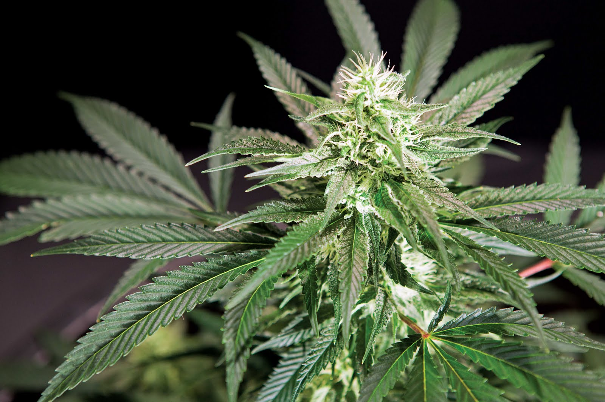

Indica Strains are better than Sativa Strains for every reason. Indica plants grow far faster than Sativa while still yeilding the same bud growth, they are also much more efficient in providing medicinal effects for patients. Indica plants on averave take 7-9 weeks to fully grow into usable, harvestable bud. While Sativa Strains take on average 9-12 weeks to fully develop. Due to extended growing periods, Sativa strains are usually around $30 - $50 more expensive than Indica's as well. Indica is also much more beneficial with medicinal attributes, such as depression, anxiety, pain relief, loss of appitite, headaches, and many more as well!
Sativa Strains are superior to Indica Strain's in every way. Sativa plants grow slower but have the potential to yeild higher THC amounts. Because of this Sativa strain's are used world wide for upper body pain relief and general enjoyment and consumtion. Sativa Strains are more popular on the West Coast due to the intense conditions needed for growing these plants. Generally they are used less for medicinal reason's because of their highly sedating feeling and are used more for recreational use.